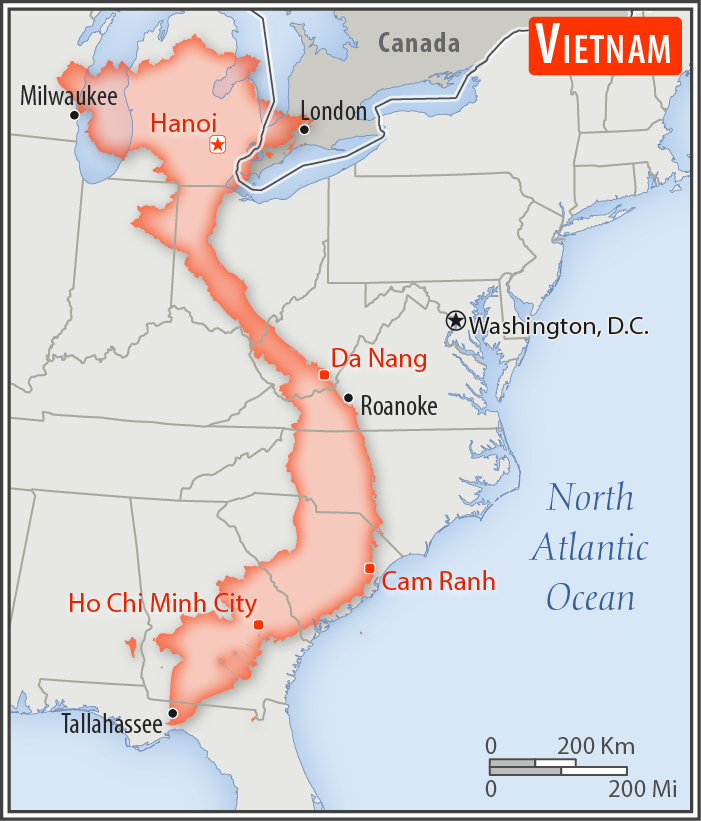

Source: CIA World Factbook
The conquest of Vietnam by France began in 1858 and was completed by 1884. It became part of French Indochina in 1887. Vietnam declared independence after World War II, but France continued to rule until its 1954 defeat by communist forces under Ho Chi MINH. Under the Geneva Accords of 1954, Vietnam was divided into the communist North and anti-communist South. US economic and military aid to South Vietnam grew through the 1960s in an attempt to bolster the government, but US armed forces were withdrawn following a cease-fire agreement in 1973. Two years later, North Vietnamese forces overran the South reuniting the country under communist rule. Despite the return of peace, for over a decade the country experienced little economic growth because of conservative leadership policies, the persecution and mass exodus of individuals - many of them successful South Vietnamese merchants - and growing international isolation. However, since the enactment of Vietnam's "doi moi" (renovation) policy in 1986, Vietnamese authorities have committed to increased economic liberalization and enacted structural reforms needed to modernize the economy and to produce more competitive, export-driven industries. The communist leaders maintain tight control on political expression but have demonstrated some modest steps toward better protection of human rights. The country continues to experience small-scale protests, the vast majority connected to either land-use issues, calls for increased political space, or the lack of equitable mechanisms for resolving disputes. The small-scale protests in the urban areas are often organized by human rights activists, but many occur in rural areas and involve various ethnic minorities such as the Montagnards of the Central Highlands, Hmong in the Northwest Highlands, and the Khmer Krom in the southern delta region.
Southeastern Asia, bordering the Gulf of Thailand, Gulf of Tonkin, and South China Sea, as well as China, Laos, and Cambodia.
About three times the size of Tennessee; slightly larger than New Mexico
Source: CIA World Factbook
Tropical in south; monsoonal in north with hot, rainy season (May to September) and warm, dry season (October to March)
102,789,598 (July 2021 est.)
country comparison to the world: 16
Vietnamese (official), English (increasingly favored as a second language), some French, Chinese, and Khmer, mountain area languages (Mon-Khmer and Malayo-Polynesian)
Source: CIA World Factbook
Buddhist 7.9%, Catholic 6.6%, Hoa Hao 1.7%, Cao Dai 0.9%, Protestant 0.9%, Muslim 0.1%, none 81.8% (2009 est.)
Communist State
Name: Hanoi (Ha Noi)
Geographic Coordinates: 21 02 N, 105 51 E
Time Difference: UTC+7 (12 hours ahead of Washington, DC, during Standard Time)
Etymology: the city has had many names in its history going back to A.D. 1010 when it first became the capital of imperial Vietnam; in 1831, it received its current name of Ha Noi, meaning "between the rivers," which refers to its geographic location
History: Several previous; latest adopted 28 November 2013, effective 1 January 2014
Amendments: Proposed by the president, by the National Assembly’s Standing Committee, or by at least two thirds of the National Assembly membership; a decision to draft an amendment requires approval by at least a two-thirds majority vote of the Assembly membership, followed by the formation of a constitutional drafting committee to write a draft and collect citizens’ opinions; passage requires at least two-thirds majority of the Assembly membership; the Assembly can opt to conduct a referendum
More information about Vietnam can be found at CIA World Factbook